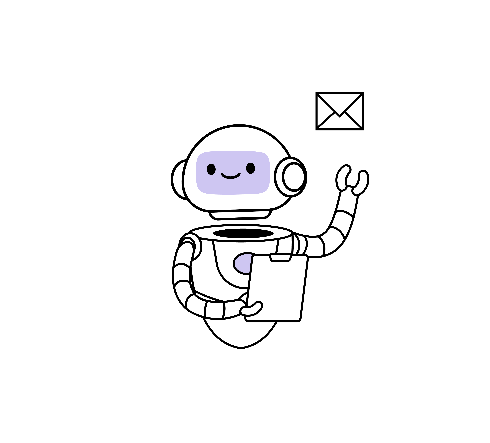
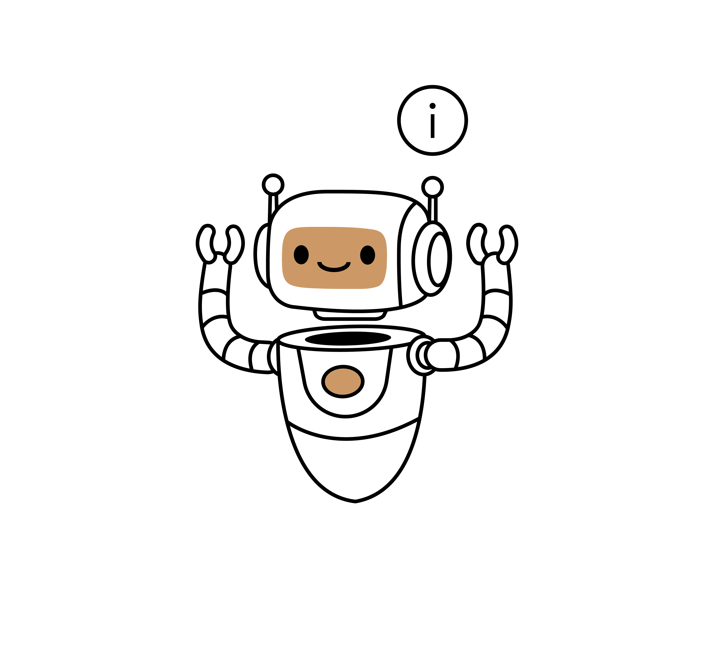
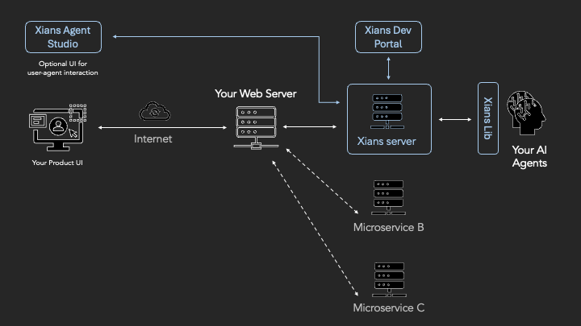

ISVs · Product vendorsSelling AI agents to your customers.
Embed agents in your SaaS or list them in a marketplace. ACP handles the per-tenant layer underneath so your team stays focused on the agent itself.
Xians ACP handles what surrounds your agents: multi-tenant access, conversations, webhooks, prompts, human tasks, scheduling, logs, and metrics. You build the agents. ACP runs the rest.
Self-hosted. Runtime-agnostic. MIT licensed.
Who uses it
Whether you ship agents to customers or run them internally, the control plane works the same way.

ISVs · Product vendorsEmbed agents in your SaaS or list them in a marketplace. ACP handles the per-tenant layer underneath so your team stays focused on the agent itself.

EnterprisesDeploy agents for your employees or internal customers. Self-hosted on your own infrastructure, with tenant isolation from day one.
Capabilities
ACP wraps your agents with the operational layer they need. The agents themselves can use any framework, any model, any data layer.
Register, version, deploy, and retire agents from one place.
Tenant isolation with per-tenant configuration, secrets, and rollout state. One deployment, many customers or teams.
One interface for conversations, webhooks, and human-in-the-loop tasks. Every channel reaches the agent the same way.
Version, review, and roll out prompts. Promote between environments and roll back when behaviour drifts.
Structured logs, metrics, and traces for every tenant, agent, and conversation.
Durable processes and schedulers. Long-running workflows survive restarts and retry safely.
Agent Studio
Agent Studio is the built-in UI for Xians ACP. It is multi-tenant from the start. Here is what ACP manages for every tenant and every agent, out of the box.
Architecture
Modern agent systems span four planes. Xians ACP owns the control plane. The other three are yours to shape.
Surface agents anywhere your users already work. Ships with Agent Studio; bring your own UI on top.
MIT licensed. Self-hosted. One place for every agent and every tenant. This is the only plane ACP owns.
Pick the frameworks, models, and tooling that fit each problem. ACP does not decide for you.
Your data stays where it is. ACP orchestrates access. It does not own the data layer.
Out of the box
Drop ACP between your web server and your agents. You inherit horizontal scalability, zero-incoming-port security, durable fault tolerance, async orchestration, and full observability without wiring any of it yourself.

Add or remove agent worker containers at any time. Temporal automatically distributes work. No orchestrator to rewrite, no service registry to maintain.
Agents run in a private subnet with outbound-only pull connections. No inbound surface, no firewall holes, no accidental exposure.
Built-in retries, timeouts, and durable state. Workflows survive worker restarts, deploys, and infrastructure hiccups, right where they left off.
Agents focus on business logic. Routing, queues, conversation history, secrets, and observability live in the platform, not in your agent code.
Even synchronous webhooks are queued and processed asynchronously. Stateless workers, configurable timeouts, massive throughput.
Tenant-scoped state, secrets, prompts, and conversation history with centralised policy. One deployment, many customers or teams.
Orchestrate multi-step business processes that span minutes, hours, days, or years, with state managed reliably on Temporal.
Every workflow execution is logged with distributed tracing. Cost, performance, and behaviour are queryable per agent and per tenant.
Why ACP
Read the code, fork it, ship it inside your product. No usage caps. No per-seat fees.
Use any agent framework, any model, any data layer. ACP works around your choices.
Durable workflows and observability are built in, not bolted on later.
The docs walk through the architecture and how to run ACP on your machine in minutes.
Editions
The code is MIT-licensed for everyone. 99x adds a Commercial Support subscription for teams that need SLAs, security assurances, and a named engineering partner.
Self-host the full platform. No usage caps, no per-seat fees, no lock-in.
The same MIT code, with 99x engineering standing behind it under a support & assurance subscription.